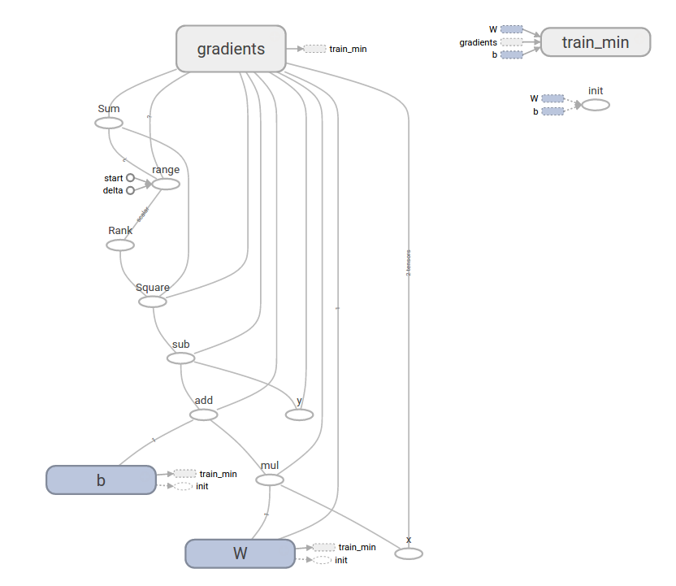

TensorFlow(3):What is a tensorflow session?
by Danijar Hafner, modified by larry
I’ve seen a lot of confusion over the rules of tf.Graph and tf.Session in TensorFlow. It’s simple:
- A
graphdefines the computation. It doesn’t compute anything, it doesn’t hold any values, it just defines the operations that you specified in your code. - A
sessionallows you to execute graphs or part of graphs. It allocates resources (on one or more machines) for that and holds the actual values of intermediate results and variables.
Let’s look at an example.
Defining the Graph
We define a graph with a variable and three operations: x returns the current value of our variable. init assigns the initial value of 42 to that variable. x_assign assigns the new value of 13 to that variable.
import tensorflow as tf
graph = tf.Graph()
with graph.as_default():
x = tf.Variable(42, name='foo')
init = tf.global_variables_initializer()
x_assign = x.assign(13)
On a side note: TensorFlow creates a default graph for you, so we don’t need the first two lines of the code above. The default graph is also what the sessions in the next section use when not manually specifying a graph.
Running Computations in a Session
To run any of the three defined operations, we need to create a session for that graph. The session will also allocate memory to store the current value of the variable.
with tf.Session(graph=graph) as sess:
sess.run(init)
sess.run(x_assign)
print(sess.run(x))
13
As you can see, the value of our variable is only valid within one session. If we try to query the value afterwards in a second session, TensorFlow will raise an error because the variable is not initialized there.
with tf.Session(graph=graph) as sess:
print(sess.run(x))
# Error: Attempting to use uninitialized value foo
Of course, we can use the graph in more than one session, we just have to initialize the variables again. The values in the new session will be completely independent from the first one:
with tf.Session(graph=graph) as sess:
sess.run(init)
print(sess.run(x))
42
Hopefully this short workthrough helped you to better understand tf.Session.
TensorFlow(1): Tensorflow Introduction
Tensorflow is an open-source software library for Machine Intelligence.
Install
Using conda tool under Anaconda to install tensorflow is a very convenient and direct way.
TensorFlow Python docset
Build TensorFlow Python docset is complex, many dependent utilities and procedures are needed. Fortunately, a feed for TensorFlow Python docset has been built for us.
Add feed below to Dash/Zeal, and install docset. (Project site)
https://raw.githubusercontent.com/ppwwyyxx/dash-docset-tensorflow/master/TensorFlow.xml
Basics
Graph and Operation
A data flow graph representing a TensorFlow computation. It can be viewed via TensorBoard.
An Operation is a node in a TensorFlow Graph that takes zero or more Tensor object as input, and produces zero or more Tensor objects as output.
For example c = tf.matmul(a, b) creates an Operation of type MatMul that takes tensors \(a\) and \(b\) as input, and produces \(c\) as output.
Session
If you are not using an InteractiveSession, then you should build the entire computation graph before starting a session and launching the graph.
Note that there are two typical ways to create and use sessions in tensorflow:
Method 1:
sess = tf.Session()
# Run the variables initialization (if needed), run the operations
result = sess.run(..., feed_dict = {...})
sess.close() # Close the session
Method 2:
with tf.Session() as sess:
# run the variables initialization (if needed), run the operations
result = sess.run(..., feed_dict = {...})
# This takes care of closing the session for you :)
Steps
Writing and running programs in TensorFlow has the following steps:
- Create Tensors (variables) that are not yet executed/evaluated.
- Write operations between those Tensors.
- Initialize your Tensors.
- Create a Session.
- Run the Session. This will run the operations you'd written above.
Learning Resources
TensorFlow(2): Getting started with TensorFlow
TensorFlow Core tutorial
importing TensorFlow
import tensorflow as tf
The Computational Graph
A computational graph is a series of TensorFlow operations arranged into a graph of nodes. Let's build a simple computational graph. Each node takes zero or more tensors as inputs and produces a tensor as an output. One type of node is a constant. Like all TensorFlow constant, it takes no inputs, and it outputs a value it stores internally. We can create two floating point Tensor node1 and node2 as follows:
node1 = tf.constant(3.0, dtype=tf.float32)
node2 = tf.constant(4.0) # also tf.float32 implicitly
print(node1, node2)
Tensor("Const:0", shape=(), dtype=float32)
Tensor("Const_1:0", shape=(), dtype=float32)
To produce output values for node1 and nodes2, evaluation is needed. To actually evaluate the nodes, we must run the computational graph within a session. A session encapsulates the control and state of the Tensorflow runtime.
The following code creates a Session object and then invokes its run method to run enough of the computational graph to evaluate node1 and node2. By running the computational graph in a session as follows:
sess = tf.Session()
print(sess.run([node1, node2]))
[3.0, 4.0]
We can build more complicated computations by combining Tensor nodes with operations(Operations are also nodes). For example, we can add our two constant nodes and produce a new graph as follows:
node3 = tf.add(node1, node2)
print('node3:', node3)
print('sess.run(node3):', sess.run(node3))
node3: Tensor("Add:0", shape=(), dtype=float32)
sess.run(node3): 7.0
TensorFlow provides a utility called TensorBoard that can display a picture of the computational graph. Here is a screenshot showing how TensorBoard visualizes the graph:

As it stands, this graph is not especially interesting because it always produces a constant result. A graph can be parameterized to accept external inputs, known as placeholders. A placeholder is a promise to provide a value later.
a = tf.placeholder(tf.float32)
b = tf.placeholder(tf.float32)
adder_node = a + b # + provides a shortcut for tf.add(a,b)
The preceding three lines are a bit like a function or a lambda in which we define two input parameters (a and b) and then an operation on them. We can evaluate this graph with multiple inputs by using the feed_dict argument to the run method to feed concrete values to the placeholder:
print(sess.run(adder_node, {a:3, b:4.5}))
print(sess.run(adder_node, {a:[1,3], b:[2,4]}))
7.5
[ 3. 7.]
In TensorBoard, the graph looks like this:

We can make the computational graph more complex by adding another operation. For example,
add_and_triple = adder_node * 3.
print(sess.run(add_and_triple,{a:3, b:4.5}))
22.5
The preceding computational graph would look as follows in TensorBoard:

In machine learning we will typically want a model that can take arbitrary inputs, such as the one above. To make the model trainable, we need to be able to modify the graph to get new outputs with the same input. variables allow us to add trainable parameters to a graph. They are constructed with a type and initial value:
W = tf.Variable([.3], dtype=tf.float32)
b = tf.Variable([-.3], dtype=tf.float32)
x = tf.placeholder(tf.float32)
linear_model = W*x +b
Constants are initialized when you call tf.constant, and their value can never change. By contrast, variables are not initialized when you call tf.Variable. To initialize all the variables in a TensorFlow program, you must explicitly call a special operation as follows:
init = tf.global_variables_initializer()
sess.run(init)
It is important to realize init is a handle to the TensorFlow sub-graph that initializes all the global variables. Until we call sess.run, the variables are uninitialized.
Since x is a placeholder, we can evaluate linear_model for several values of x simultaneously as follows:
print(sess.run(linear_model,{x:[1,2,3,4]}))
[ 0. 0.30000001 0.60000002 0.90000004]
We've create a model, but we don't know how good it is yet. To evaluate the model on training data, we need a y placeholder to provide the desired values, and we need to write a loss function.
A loss function measures how far apart the current model is from the provided data. We'll use a standard loss model for linear regression, which sums the squares of the deltas between the current model and the provided data. linear_model -y creates a vector where each element is the corresponding example's error delta. We call tf.square to square that error. Then, we sum all the squared errors to create a single scalar that abstacts the error of all examples using tf.reduce_sum:
y = tf.placeholder(tf.float32)
squared_deltas = tf.square(linear_model - y)
loss = tf.reduce_sum(squared_deltas)
print(sess.run(loss, {x:[1,2,3,4], y:[0,-1,-2,-3]}))
23.66
We could improve this manually by reassigning the values of W and b to the perfect values of -1 and 1. A variable is initialized to the value provided to tf.Variable but can be changed using operations like tf.assign. FOr example, W=-1 and b=1 are the optimal parameters for our model. We can change W and b accordingly:
fixW = tf.assign(W, [-1.])
fixb = tf.assign(b, [1.])
sess.run([fixW, fixb])
print(sess.run(loss, {x:[1,2,3,4], y:[0,-1,-2,-3]}))
0.0
We guessed the "perfect" values of W and b, but the whole point of machine learning is to find the correct model parameters automatically. We will show how to accomplish this in the next section.
tf.train API
A complete discussion of machine learning is out of the scope of this tutorial. However, TensorFlow provides optimizers that slowly change each variable in order to minimize the loss function. The simplest optimizer is gradient descent. It modifies each variable according to the magnitude of the derivative of loss with respect to that variable. In general, computing symbolic derivatives manually is tedious and error-prone. Consequently, TensorFlow can automatically produce derivatives given only a description of the model using the function tf.gradients. For simplicity, optimizers typically do this for you. For example,
optimizer = tf.train.GradientDescentOptimizer(0.01)
train = optimizer.minimize(loss)
sess.run(init) # reset values to incorrect defaults
for i in range(1000):
sess.run(train, {x:[1,2,3,4], y:[0,-1,-2,-3]})
print(sess.run([W,b]))
[array([-0.9999969], dtype=float32), array([ 0.99999082], dtype=float32)]
Now we have done actual machine learning! Although doing this simple linear regression doesn't require much TensorFlow core code, more complicated models and methods to feed data into your model necessitate more code. Thus TensorFlow provides higher level abstractions for common patterns, structures, and functionality. We will learn how to use some of these abstractions in the next section.
Complete program
import tensorflow as tf
# Model parameters
W = tf.Variable([.3], dtype=tf.float32)
b = tf.Variable([-.3], dtype=tf.float32)
# Model input and output
x = tf.placeholder(tf.float32)
linear_model = W * x + b
y = tf.placeholder(tf.float32)
# loss
loss = tf.reduce_sum(tf.square(linear_model - y)) # sum of the squares
# optimizer
optimizer = tf.train.GradientDescentOptimizer(0.01)
train = optimizer.minimize(loss)
# training data
x_train = [1, 2, 3, 4]
y_train = [0, -1, -2, -3]
# training loop
init = tf.global_variables_initializer()
sess = tf.Session()
sess.run(init) # reset values to wrong
for i in range(1000):
sess.run(train, {x: x_train, y: y_train})
# evaluate training accuracy
curr_W, curr_b, curr_loss = sess.run([W, b, loss], {x: x_train, y: y_train})
print("W: %s b: %s loss: %s"%(curr_W, curr_b, curr_loss))
W: [-0.9999969] b: [ 0.99999082] loss: 5.69997e-11
This more complicated program can still be visualized in TensorBoard:

tf.estimator
tf.estimator is a high-level TensorFlow library that simplifies the mechanics of machine learning, including the following:
- running training loops
- running evaluation loops
- managing data sets
tf.estimatordefines many common models.
Basic usage
Notice how much simpler the linear regression program becomes with tf.estimator:
# NumPy is often used to load, manipulate and preprocess data.
import numpy as np
# Declare list of features. We only have one numeric feature. There are many
# other types of columns that are more complicated and useful.
feature_columns = [tf.feature_column.numeric_column("x", shape=[1])]
# An estimator is the front end to invoke training (fitting) and evaluation
# (inference). There are many predefined types like linear regression,
# linear classification, and many neural network classifiers and regressors.
# The following code provides an estimator that does linear regression.
estimator = tf.estimator.LinearRegressor(feature_columns=feature_columns)
# TensorFlow provides many helper methods to read and set up data sets.
# Here we use two data sets: one for training and one for evaluation
# We have to tell the function how many batches
# of data (num_epochs) we want and how big each batch should be.
x_train = np.array([1., 2., 3., 4.])
y_train = np.array([0., -1., -2., -3.])
x_eval = np.array([2., 5., 8., 1.])
y_eval = np.array([-1.01, -4.1, -7, 0.])
input_fn = tf.estimator.inputs.numpy_input_fn(
{"x": x_train}, y_train, batch_size=4, num_epochs=None, shuffle=True)
train_input_fn = tf.estimator.inputs.numpy_input_fn(
{"x": x_train}, y_train, batch_size=4, num_epochs=1000, shuffle=False)
eval_input_fn = tf.estimator.inputs.numpy_input_fn(
{"x": x_eval}, y_eval, batch_size=4, num_epochs=1000, shuffle=False)
# We can invoke 1000 training steps by invoking the method and passing the
# training data set.
estimator.train(input_fn=input_fn, steps=1000)
# Here we evaluate how well our model did.
train_metrics = estimator.evaluate(input_fn=train_input_fn)
eval_metrics = estimator.evaluate(input_fn=eval_input_fn)
print("train metrics: %r"% train_metrics)
print("eval metrics: %r"% eval_metrics)
INFO:tensorflow:Using default config.
WARNING:tensorflow:Using temporary folder as model directory: /var/folders/66/y1hc77j572v71r0gm2r39rfr0000gn/T/tmp2rnith_a
INFO:tensorflow:Using config: {'_model_dir': '/var/folders/66/y1hc77j572v71r0gm2r39rfr0000gn/T/tmp2rnith_a', '_tf_random_seed': 1, '_save_summary_steps': 100, '_save_checkpoints_secs': 600, '_save_checkpoints_steps': None, '_session_config': None, '_keep_checkpoint_max': 5, '_keep_checkpoint_every_n_hours': 10000, '_log_step_count_steps': 100}
INFO:tensorflow:Create CheckpointSaverHook.
INFO:tensorflow:Saving checkpoints for 1 into /var/folders/66/y1hc77j572v71r0gm2r39rfr0000gn/T/tmp2rnith_a/model.ckpt.
INFO:tensorflow:loss = 19.0, step = 1
INFO:tensorflow:global_step/sec: 592.325
INFO:tensorflow:loss = 0.192443, step = 101 (0.171 sec)
INFO:tensorflow:global_step/sec: 710.314
INFO:tensorflow:loss = 0.0370785, step = 201 (0.141 sec)
INFO:tensorflow:global_step/sec: 669.791
INFO:tensorflow:loss = 0.0173565, step = 301 (0.150 sec)
INFO:tensorflow:global_step/sec: 729.609
INFO:tensorflow:loss = 0.00361388, step = 401 (0.136 sec)
INFO:tensorflow:global_step/sec: 814
INFO:tensorflow:loss = 0.000215951, step = 501 (0.123 sec)
INFO:tensorflow:global_step/sec: 793.172
INFO:tensorflow:loss = 0.0001734, step = 601 (0.127 sec)
INFO:tensorflow:global_step/sec: 776.415
INFO:tensorflow:loss = 3.66416e-05, step = 701 (0.128 sec)
INFO:tensorflow:global_step/sec: 845.781
INFO:tensorflow:loss = 3.03422e-06, step = 801 (0.118 sec)
INFO:tensorflow:global_step/sec: 849.689
INFO:tensorflow:loss = 1.18453e-06, step = 901 (0.118 sec)
INFO:tensorflow:Saving checkpoints for 1000 into /var/folders/66/y1hc77j572v71r0gm2r39rfr0000gn/T/tmp2rnith_a/model.ckpt.
INFO:tensorflow:Loss for final step: 3.72255e-07.
INFO:tensorflow:Starting evaluation at 2017-08-21-05:57:38
INFO:tensorflow:Restoring parameters from /var/folders/66/y1hc77j572v71r0gm2r39rfr0000gn/T/tmp2rnith_a/model.ckpt-1000
INFO:tensorflow:Finished evaluation at 2017-08-21-05:57:40
INFO:tensorflow:Saving dict for global step 1000: average_loss = 6.05797e-08, global_step = 1000, loss = 2.42319e-07
INFO:tensorflow:Starting evaluation at 2017-08-21-05:57:40
INFO:tensorflow:Restoring parameters from /var/folders/66/y1hc77j572v71r0gm2r39rfr0000gn/T/tmp2rnith_a/model.ckpt-1000
INFO:tensorflow:Finished evaluation at 2017-08-21-05:57:42
INFO:tensorflow:Saving dict for global step 1000: average_loss = 0.00254753, global_step = 1000, loss = 0.0101901
train metrics: {'average_loss': 6.057968e-08, 'loss': 2.4231872e-07, 'global_step': 1000}
eval metrics: {'average_loss': 0.0025475256, 'loss': 0.010190102, 'global_step': 1000}
Convolutional Neural Networks
Architecture
Three main types of layers to build ConvNet architectures: Convolutional Layer, Pooling Layer and Fully-Connected Layer.
The layers of a ConvNet have neurons arranged in 3 dimensions: width, height, depth.

A simple ConvNet for CIFAR-10 classification could have the architecture as follows:
- INPUT [width x height x color channel] will hold the raw pixel values of the image, in this case an image of width, height, and with three color channels R,G,B.
- CONV layer will compute the output of neurons that are connected to local regions in the input, each computing a dot product between their weights and a small region they are connected to in the input volume.
- RELU layer will apply an elementwise activation function, such as the
max(0,x)thresholding at zero. - POOL layer will perform a downsampling operation along the spatial dimensions (width, height).
- FC (i.e. fully-connected) layer will compute the class scores, where each score corresponding to the 10 categories of CIFAR-10. As with ordinary Neural Networks and as the name implies, each neuron in this layer will be connected to all the numbers in the previous volume.
Conv layers
Four hyperparameters depth(K), spatial extent(\(F\)), stride(\(S\)) and zero-padding(\(P\)) control the size of the output volume from the input volume (\(W\)).
Summary. To summarize, the Conv Layer:
- Accepts a volume of size \(W_1 \times H_1 \times D_1\)
- Requires four hyperparameters:
- Number of filters \(K\),
- their spatial extent \(F\),
- the stride \(S\),
- the amount of zero padding \(P\).
- Produces a volume of size \(W_2 \times H_2 \times D_2\) where:
- \(W_2 = (W_1 - F + 2P)/S + 1\)
- \(H_2 = (H_1 - F + 2P)/S + 1\) (i.e. width and height are computed equally by symmetry)
- \(D_2 = K\)
- With parameter sharing, it introduces \(F \cdot F \cdot D_1\) weights per filter, for a total of \((F \cdot F \cdot D_1) \cdot K\) weights and \(K\) biases.
- In the output volume, the \(d\)-th depth slice (of size \(W_2 \times H_2\)) is the result of performing a valid convolution of the \(d\)-th filter over the input volume with a stride of \(S\), and then offset by \(d\)-th bias.
parameter sharing: the neurons in each depth slice(i.e \(K\)) to use the same weights and bias.
Pooling
max pooling is the most common function performed on the pooling units, others like average pooling or L2-norm pooling is work worse in practice. And Many people dislike the pooling operation and think that we can get away without it.
Fully-connected layers
Neurons in a fully connected layer have full connections to all activations in the previous layer.
Layer Patterns
The most common form of a ConvNet architecture stacks a few CONV-RELU layers, follows them with POOL layers, and repeats this pattern until the image has been merged spatially to a small size. At some point, it is common to transition to fully-connected layers. The last fully-connected layer holds the output, such as the class scores. In other words, the most common ConvNet architecture follows the pattern:
\[INPUT \rightarrow [[CONV \rightarrow RELU]*N \rightarrow POOL?]*M \rightarrow [FC -> RELU]*K \rightarrow FC\]
where the * indicates repetition, and the POOL? indicates an optional pooling layer. Moreover, N >= 0 (and usually N <= 3), M >= 0, K >= 0 (and usually K < 3). For example, here are some common ConvNet architectures you may see that follow this pattern:
Note: INPUT -> FC, implements a linear classifier. Here N = M = K = 0.
Note: Prefer a stack of small filter CONV to one large receptive field CONV layer, because of few parameters needed and expressing more powerful features of the input.
Layer Sizing Patterns
- input layer: Common numbers include 32 (e.g. CIFAR-10), 64, 96 (e.g. STL-10), or 224 (e.g. common ImageNet ConvNets), 384, and 512.
- conv layers: small filters(\(3\times3\) or \(5\times5\)), with \(S=1\). Crucially, padding the input volume with zeros in such way that the conv layer does not alter the spatial dimensions of the input.
- pool layers: use max-pooling with \(F=2, S=2\) or \(F=3, S=2\)
Computational Considerations
The memory bottleneck is the largest bottleneck when constructing ConvNet architectures.
Python `virtualenv` on mac
Install
Install virtualenv using conda instead of pip, because it might raise error (see on StackOverflow)
conda install virtualenv
create your environment
Now you can create your python environment for your particular programs. For example, under the folder your project, you create an environment called .venv by:
virtualenv --no-site-packages .venv
The command --no-site-packages requires the environment should not access to global site-packages (as default now).
Before running your program in your created environment, you need to activate it:
source .venv/bin/activate
And remember to deactivate it whenever you are done.:
deactivate

Copyright © 2015 Powered by MWeb, Theme used GitHub CSS.